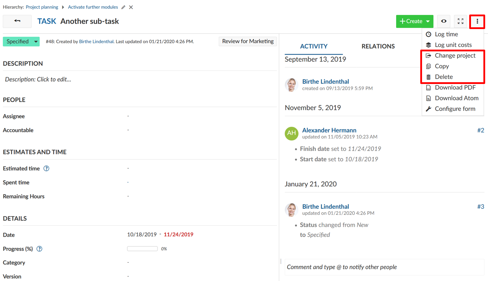
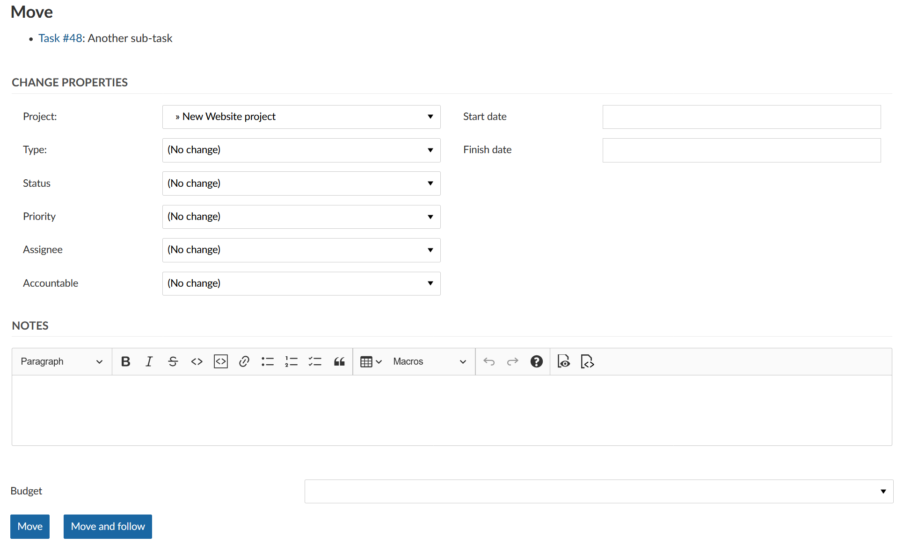

You can make the following changes to your work packages: you can copy a work package, change the project or delete a work package.
Open the work packages details view, click on the More functions (the three dots at the top right of the work package details) and select the respective menu item.

To copy, move or delete multiple work packages at once please refer to the documentation for bulk edit.
When copying a work package, a work package form with the pre-set values of the original work package is shown.
Copying a work package allows to easily create and adjust new work packages based on existing one’s.
The change project option moves a work package to another project or subproject. Select the project into which the work package is to be moved, check whether further adjustments are necessary and confirm by clicking on Move.

The right to delete work packages is tied to specified roles (for example system administrators). The roles and permission may vary from project to project.
You can select these options either in the detail view under More or via the context menu by right-clicking into the work package list. The latter option allows you to perform an action (such as copying, moving or deleting a work package) on multiple work packages at once.